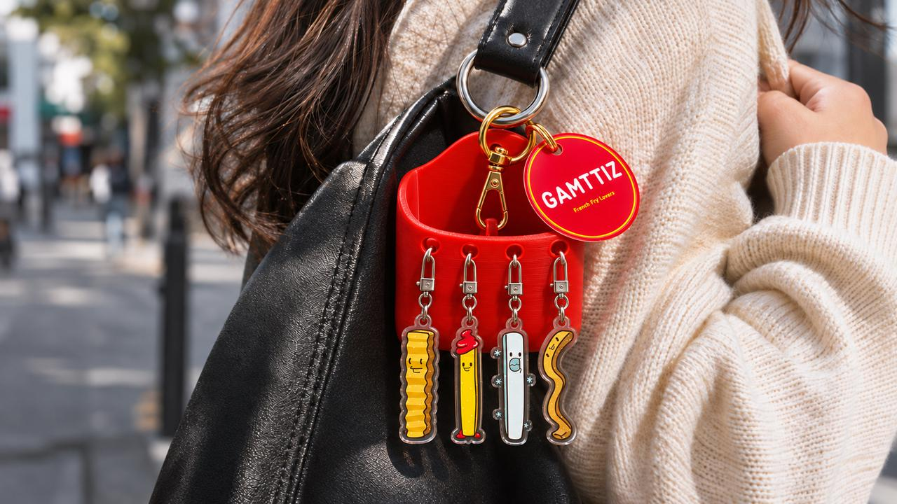
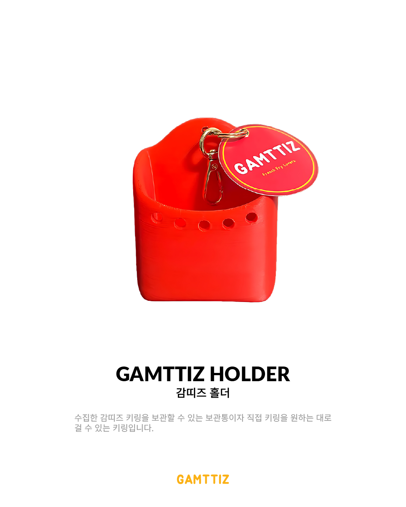
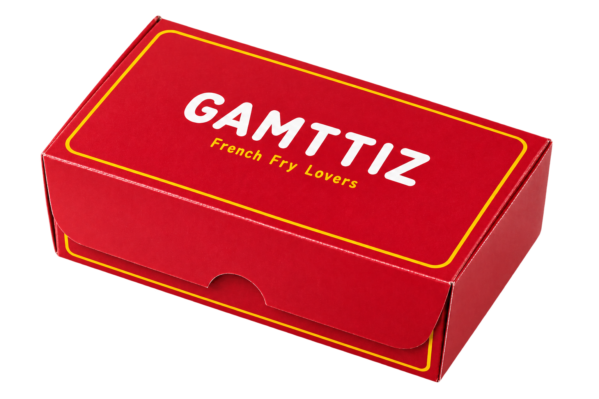
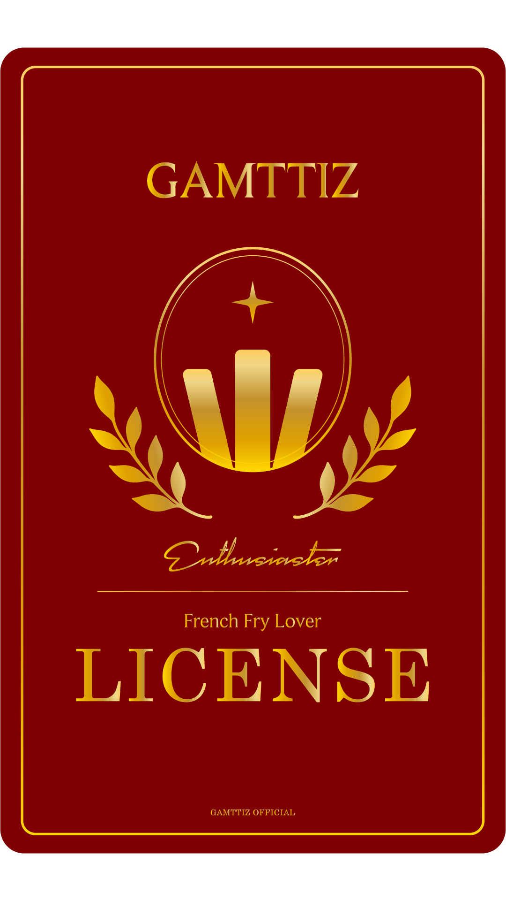

01감자튀김의 익숙하고
A LITTLE DIFFERENT
감자튀김의 익숙하고
새로운 모습!
감자튀김을 먹으면서 한 번쯤 봤던, 또는 처음 보는 새로운 모습의 감자튀김들을 감띠즈를 통해 만나 보세요!
GAMTTIZ · FRENCH FRY LOVERS
반듯해도, 휘어져도, 조금 타도 괜찮아.
저마다의 매력을 가진 감띠즈를 만나보세요.
FIND YOUR FAVORITE
14종의 아크릴 키링.
각자의 이야기를 만나보세요.
A LITTLE DIFFERENT
감자튀김을 먹으면서 한 번쯤 봤던, 또는 처음 보는 새로운 모습의 감자튀김들을 감띠즈를 통해 만나 보세요!

YOUR EVERYDAY FRIEND
감띠즈 홀더 키링에 원하는 감띠즈를 골라 같이 달아 보세요.
마음에 드는 친구들을 모아 함께하는 재미!

BETTER TOGETHER
GAMTTIZ HOLDER
수집한 감띠즈 키링을 보관하고,
원하는 대로 걸어 꾸밀 수 있는 빨간 홀더.
나만의 감띠즈 컬렉션을 완성해 보세요.

SPECIAL KEYRING RANDOM BOX
감띠즈 키링은 빨간 랜덤박스에 담겨 있어요. 실물 박스부터 14종의 키링까지 제품 페이지에서 살펴보세요.
제품 정보 보기
감자튀김과 관련된 새 소식을 모아봐요.
새로운 감튀 소식을 확인하고 있어요.
GAMTTIZ / NOTICE
감띠즈의 업데이트와 제작·운영 소식을 전합니다. 감자튀김 관련 할인·행사는 Fry Rader에서 확인할 수 있어요.
공지 확인하기HOW TO ENJOY GAMTTIZ
14종의 표정과 이야기를 둘러보세요. 제품 카드를 누르면 원본 소개와 설명을 크게 볼 수 있어요.
빨간 홀더는 수집한 키링의 보관통이자, 원하는 대로 키링을 걸어 꾸미는 공간이에요.
홀더 살펴보기 ↗감띠즈의 새로운 소식과 제품 관련 문의는 공식 인스타그램에서 확인해 주세요.
공식 인스타그램 ↗CONTACT & COLLABORATION
캐릭터·굿즈 협업, 프로젝트 제안, 제품 관련 문의를 환영합니다.